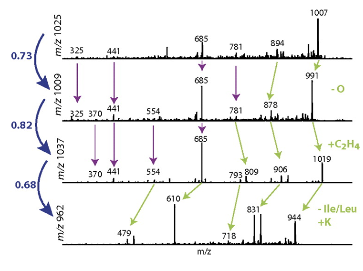
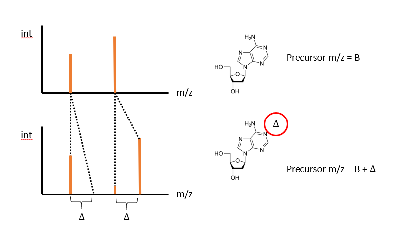

Molecular Networking
Molecular Networking Theory¶
While there are many publications out there giving algorithmic and intuition into molecular networking, we attempt a cliff notes version here.
Spectral Similarity Related to Molecular Structure Similarity¶
A key concept in tandem mass spectrometry is that repeated MS/MS acquisitions of a molecule under the same experimental conditions (e.g. same instrument, collision energy, abundance, charge state) will yield highly similar MS/MS spectra. That is, fragmentation of molecules is consistent. This enables the identification of MS/MS spectra to libraries of reference compounds.
Extending this concept, we have observed that structurally related molecules also exhibit similar fragmentation, with some caveats. Intuitively, two molecules that differ by the addition of a single chemical moiety, which does not contribute to a significant difference in molecule mass and not drastically change the bond energies of the molecule (e.g. Oxidation, methylation, glycosylation), will not drastically perturb the gas phase chemistry of fragmentation.
Given that relative bond strengths between the two molecules do not drastically differ, the same bonds will undergo similar fragmentation within the collision cell of the mass spectrometer. The resulting corresponding product ions in the MS/MS spectra from the two molecules will either include the additional chemical moiety or will not. In cases fragments do not, the chemical moiety could either have
- Not been part of the product ion substructure
- Cleaved off prior to product ion formation
Since corresponding product ions between structurally similar molecules can either have moiety or not, the product ions can either
- Appear at the exact same mass for both molecules
- Appear shifted by the mass of the chemical moiety

We consider both of these possibilities for each and every peak between two MS/MS spectra and explore how we do that below.
Spectrum Alignment¶
We will use a toy example here to demonstrate intuitively how we are able to consider an alignment between two MS/MS spectra.
Given two molecules that differ by a single chemical moiety that each produce fragmentation as shown

We can consider that each peak from molecule A, could align at the same mass in molecule B, or at an offset of Mass(Delta). One possible alignment is all peaks in A, align at the same mass

Another, where the first peak aligns at the same mass, the second at an offset

Third, where the first peak aligns at an offset, and the second aligns at the same mass

Finally, where both peaks align at an offset

All of these potential alignments can be explored and the best scoring alignment is determined between the two MS/MS spectra and is called the alignment score.
The total number of potential alignments is exponential (2 ^ N, where N is the number of peaks) and is computationally expensive. GNPS has implemented algorithms that can efficiently approximate this alignment.
Alignment of Entire Dataset¶
So far we've investigated how to align one MS/MS spectrum to another, but have not created molecular networks across an entire dataset of MS/MS spectra. Since we do not know a priori, which MS/MS spectra will be structurally similar to any others, we must try aligning all MS/MS spectra within a dataset to all others. GNPS calculates the score between all MS/MS spectra within a dataset that provides the starting point of a molecular network.
Network Filtering for Visualization¶
The alignments between all MS/MS spectra must be filtered in order to produce molecular networks that can be visualized and interpretable.
Alignment Score Filtering¶
The most basic filter is by alignment score between MS/MS spectra. Generally, the default of cosine of 0.7 and 6 minimum matches peaks reduces the number of false positive alignments tremendously.
Neighbor Top K¶
A pathological case in Molecular Networks are promiscuous MS/MS spectra that align to many other MS/MS spectra due to a low complexity of fragmentation. To counteract this, only retain alignments between alignments between MS/MS spectra that mutually rank each other highly in the alignment score. Just like in human relationships, who wants a best friend who has a million other best friends?
Connected Component Max Size¶
Even with the above filters, the occasional false positive connections causes hairball networks that make visualization/interpretation difficult. The connected component size filter limits the maximum size of a single molecular network to a parameterized number of nodes (100 by default). This process iteratively breaks up large hairball networks by removing the lowest scoring alignments (by cosine score) first until the resulting pieces fall below the maximum size.
Limitation of Molecular Networking¶
Multiple Modifications¶
Molecular networking is unable to align spectra from molecules that differ by two distinct structural modifications. We have observed that this limitation is ameliorated in biological datasets because chemical modifications are enzymatically catalyzed. In the event that two molecules differ by two distinct chemical modification which cannot be connected by molecular networking, an intermediate molecule which differs by only a single chemical modification to the respective molecules and links all three molecules into a molecular family.